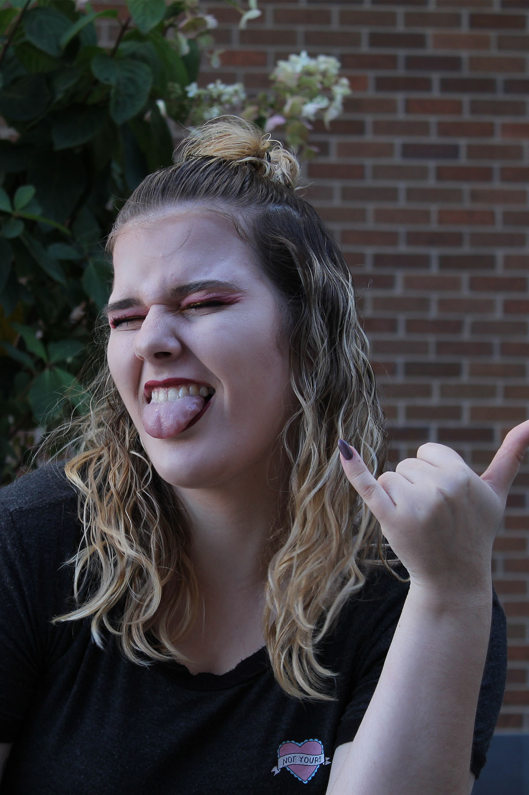
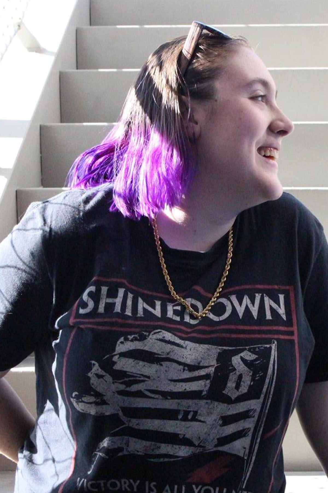
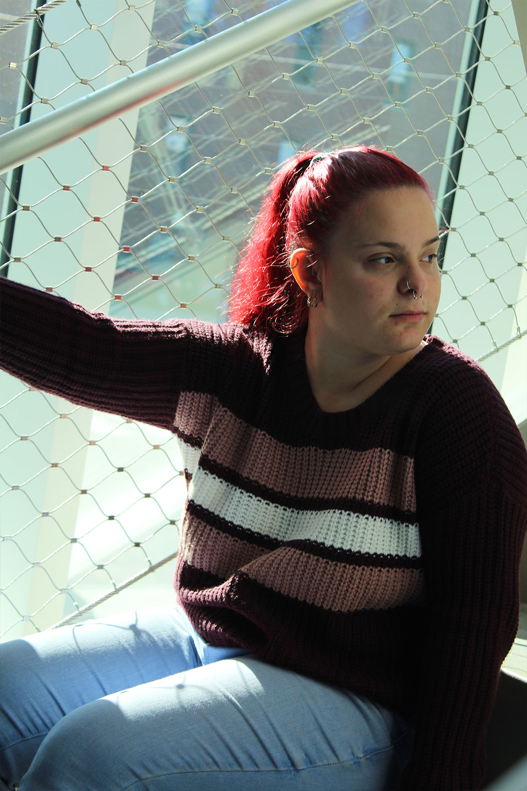

who?
  Name Chains was founded by a group of 3 independent, strong women with a passion for creativity. One day, Jessica was in the store (left) and saw a box of multicolored paperclips and thought, "Could I create something new?". With that idea in mind, Name Chains was born as she ran to tell her friends Francesca (middle) and Sabrina (right) about her idea. Interested in the concept, they joined the team and began to create one-of-a-kind, handmade necklaces from your everyday paperclip.
what?

What is a name chain? Simply put -- a handmade necklace made of everyday paperclips. What makes us special? All of our products are made in the USA, made by hard-working women, affordable (under %10!), fashionable, and a unique addition to any jewelry box. This is something you will not find by anyone else in the industry but us!
when?
2019!
Our company was founded in January of 2019, delivering simple, cute, and practical fashion. Never go without a paper clip again!
why?

This business was created based on a dream by your every day college student -- a dream to start her own business founded by women for women. She grew up being the "strange girl" in school, but persevered through the taunts and teases to become her own unique person. A paperclip is malleable, able to bend its shape and change, just as we humans are into the people we are today.
how?


You can get your very own Name Chain at any one of these retail stores nearest you!
huh?
Some of our frequently asked questions are why we chose paperclips, why our logo has eyes, and if we are currently offering an online shop. We chose paperclips because we already use other metals in necklaces, and using paperclips is a sustainable way to recycle unused paperclips into something more elegant. Our logo has eyes because she is based off of Microsoft's Clippy from older versions of Microsoft Word. It was a clever idea that just appeared out of the blue, almost like how the company was founded. Unfortunately, we are not currently offering an online shop at this time; however, stay tuned as we are hoping to offer our products online as well as in stores!

Still need more information? Give us a shout at support@namechains.com and we'll be in touch within 24 hours!